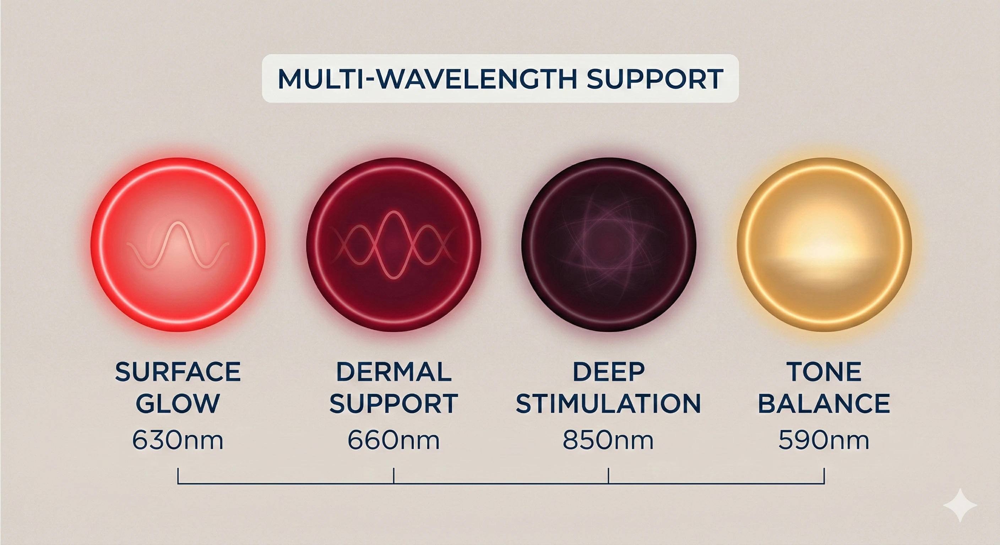
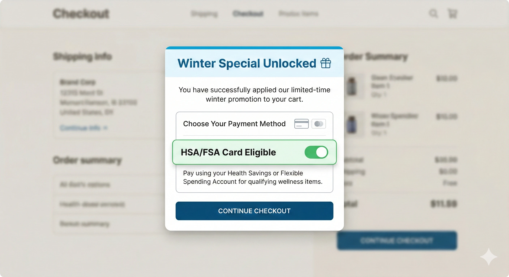
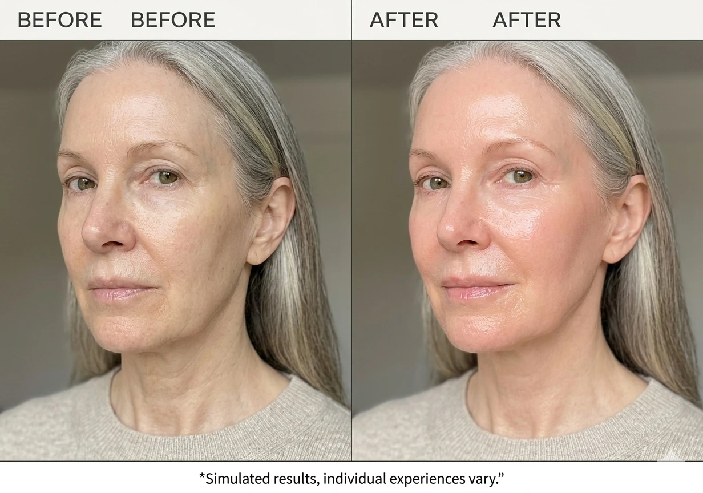

You’ve probably seen the ads—flashy, "revolutionary" skin gadgets that promise the world, cost a fortune, and end up gathering dust in your bathroom drawer.
This one is different. Because for once, it’s engineered by real experts, vetted by the harshest retail buyers in the country, and actually fits into your daily life.
Meet the SolarWave LED Face Mask—the lightweight, flexible, FDA-cleared device that is shocking the beauty industry and redefining what’s possible from the comfort of your own home.
SolarWave isn’t another cheap, unknown brand flooding your social media feed. It is a genuine staple in high-end beauty.
To put it in perspective: buyers at stores like Ulta, Nordstrom, and Neiman Marcus are notoriously strict. They test countless devices and reject almost all of them. The fact that SolarWave is currently carried by these major U.S. retailers is a massive credibility signal. It means the technology isn't just a gimmick—it has passed the ultimate trust test.
"I’ve tested countless at-home devices," notes Dr. Emily Russell. "SolarWave is one of the few LED masks I actually trust for consistent, real-world usability because the engineering is sound and the compliance is there."
Forget bulky, rigid plastic masks that feel claustrophobic and take 20 minutes to use. SolarWave disappears comfortably onto your face while delivering powerful, professional-grade light therapy.
To put it simply: this is the first truly accessible LED mask that actually fits into a busy woman's lifestyle.
Right now, SolarWave is running a strict Buy One Get One (BOGO) promotion. However, this is an online-only offer. You will not find this deal in retail stores.
Check BOGO Availability Here →*Due to high demand, inventory is strictly controlled. Check your eligibility now.
Most LED masks still rely on outdated designs—hard plastic shells that sit uncomfortably on the bridge of your nose.
SolarWave redesigned every element. By utilizing flexible silicone, the LED diodes sit closer to the skin, meaning the light is absorbed more efficiently. The result is a multi-wavelength approach that requires only a fraction of the time.

Over time, this precise combination of Red and Near-Infrared light supports the appearance of firmer, smoother skin. It may help the look of fine lines and uneven tone gently, without any of the stinging or peeling associated with chemical treatments.
Now, that proven approach to better skin is available in a simpler device you can use entirely at home. No appointments, no tipping, no waiting rooms—just clear, radiant results from a brand trusted by top retailers.
And here is the secret many shoppers don't realize: Because of its FDA-cleared status and light therapy technology, many users are checking out using their HSA or FSA cards.

While approval always depends on your specific insurance plan and provider, the official SolarWave checkout page includes a dedicated HSA/FSA payment option, making it incredibly easy to see if your funds can cover the cost.
When you secure your device through the official online portal, you aren't just getting the mask. Every SolarWave package comes complete with:
Whether you're preparing for a big event, or just want to feel more confident without makeup, the 3-minute routine makes it possible.

If you want to secure the Buy One Get One deal (perfect for keeping one and gifting one), you must check your eligibility online.
Step 1: Click the button below to visit the official qualification page.
Step 2: Complete the short eligibility check.
Step 3: If approved, select the HSA/FSA payment method at checkout to see if your plan covers it.